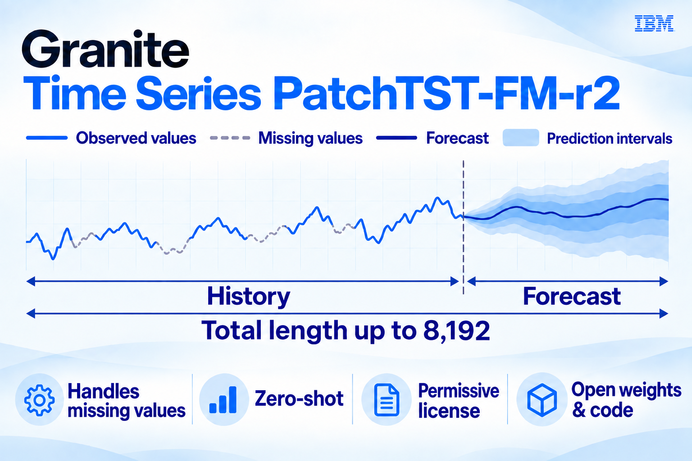

07 Hugging Face 게시일 2026.09.09
IBM, 상용 친화 시계열 모델 내놨다

이 모델은 시간의 흐름에 따라 쌓이는 데이터를 예측하는 데 쓴다. 기업은 보통 데이터셋마다 별도 모델을 학습했지만, IBM은 미리 학습한 범용 모델을 바로 적용하는 방식을 내세웠다. 이번 모델은 성능만 강조하지 않았다. 가중치와 코드, 라이선스, 학습 데이터 구성도 함께 밝혔다.
핵심 브리핑
IBM은 수요, 가격, 에너지 부하, 트래픽, 텔레메트리 같은 시계열을 제로샷으로 예측하는 Granite Time Series PatchTST-FM-r2를 공개했다. 이 모델은 데이터셋마다 개별 모델을 다시 학습하지 않고 바로 예측하는 용도를 겨냥한다. 결측치 보정과 확률 예측도 지원한다.
IBM은 2026년 9월 8일 기준 이 모델이 GIFT-Eval 리더보드에서 상용 친화 오픈소스 라이선스 모델 가운데 최고 성능이라고 밝혔다. 복제 가능하고 제로샷이며 테스트 누수가 없는 모델만 놓고 보면 전체 2위다. IBM은 가중치와 아키텍처, 추론 파이프라인, 벤치마크 재현 코드를 함께 공개했다.
- 모델 크기는 약 385M 파라미터다
- 최대 컨텍스트 길이는 8,192다
- 99개 분위수 예측 헤드를 지원한다
- GIFT-Eval CRPS는 0.467이다
- GIFT-Eval MASE는 0.6846이다
- 라이선스는 Apache 2.0과 OpenMDW 1.0 중 선택형이다
IBM은 이전 버전 r1보다 내부 구조를 바꿨다. 표준 트랜스포머 층 대신 Conformer 블록을 넣었다. 블록 수는 20개에서 30개로 늘렸다. 패치는 50% 겹치게 배치했고, 경계는 Hamming 윈도와 overlap-and-add 방식으로 부드럽게 처리했다.
스펙과 도입 조건
도입 조건은 비교적 명확하다. 모델 가중치와 구현, 추론 코드가 열려 있다. 라이선스도 Apache 2.0과 OpenMDW 1.0을 함께 제공해 사용자가 하나를 고를 수 있다.
IBM은 학습 데이터 출처도 네 가지로 공개했다. GiftEvalPretrain 일부, KernelSynth 기반 합성 데이터, GIFT-Eval 평가셋 밖의 데이터만 쓴 TSMixup 코퍼스, 길이 4,096의 합성 CauKer 시퀀스 약 50만 개다. 벤치마크 학습 데이터 누수 여부를 따져야 하는 기업에는 이 정보가 중요하다.
성능 비교가 핵심이라 표로 정리한다.
| 구분 | 순위 조건 | CRPS | MASE |
|---|---|---|---|
| 복제 가능·제로샷·테스트 누수 없음 | 전체 2위 | 0.467 | 0.6846 |
| 상용 친화 라이선스 모델 | 1위 | 0.467 | 0.6846 |
| 복제 가능 모델 전체에 사전학습형 포함 | CRPS 3위·MASE 4위 | 0.467 | 0.6846 |
업계의 움직임
IBM은 이 모델이 일부 더 큰 경쟁 모델을 앞섰다고 비교했다. 비교 대상으로는 Chronos-2, Timer-S1, Toto 계열이 언급됐다. 고객 반응이나 외부 도입 사례는 발췌에서 확인되지 않았다.
시사점과 체크포인트
금융IT에서는 거래량, 수요, 장애 지표, 지연 시간 예측처럼 시계열 업무가 많다. 이 모델은 제로샷 적용이 강점이라 파일럿 속도를 높일 수 있다. 데이터셋마다 모델을 새로 학습하는 부담도 줄일 수 있다.
검토할 팀은 데이터사이언스, 플랫폼, 보안, 법무다. 라이선스는 선택형이지만 실제 배포 정책은 내부 기준으로 다시 확인해야 한다. 벤치마크 재현 코드가 열려 있으니 우리 데이터로 오프라인 검증부터 진행하는 편이 안전하다.
주의점도 있다. 리더보드 순위는 2026년 9월 8일 시점 기준이다. 운영 환경에서 필요한 지연 시간과 비용, 드리프트 대응 성능은 별도 확인이 필요하다.
주요 용어
원문 정보
제목: IBM releases SOTA Granite Time Series PatchTST-FM-r2 model with commercial-friendly license
게시일: 2026.09.09
출처 URL: https://huggingface.co/blog/ibm-research/ibm-releases-sota-granite-time-series